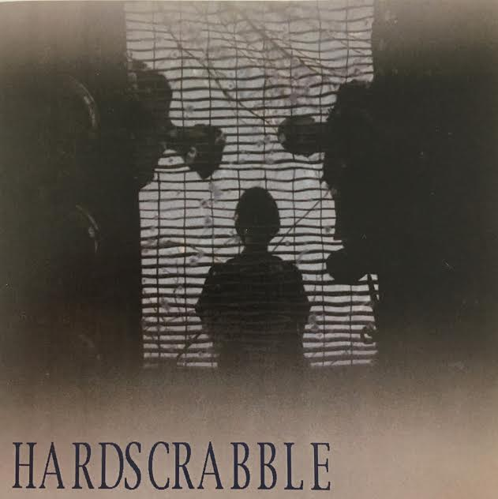

Boys On Trial
If it's the last thing we do...

Hardscrabble
Grate Theme

At First Take Studios we believe the energy of a first take should be in every take.
Throughout the recording process you may make mistakes, overdub instruments and vocals, or change parts.
But no matter what your process is, we want to help you always mainatin the energy and excitement of that first take.